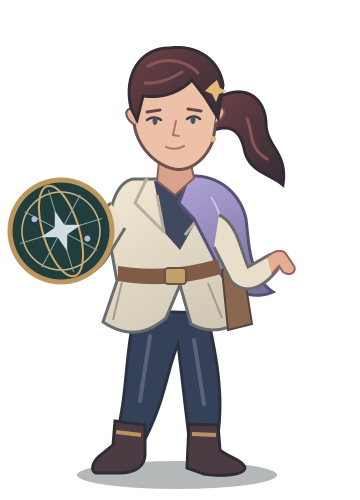

04 / THE STARMAPPER霁月 · 星图师成年女性 / 沉静敏锐 / 精英点杀露出面部，侧束发与偏置星盘构成不对称轮廓。服装围绕测绘与遗迹行动设计，避免复用蒙面斗篷。星痕标记表现精准观察，不新增主动技能键。头像裁切64px 全身缩略灰度检查下一步：手绘体积、布料材质、面部细化与独立战斗精灵。
05 / THE REPAIR UNITR-07 · 螺灯旧世维修机器人 / 温和可靠 / 护盾续航独立机械体块，矮宽机身与短腿表现低重心。暖金胸灯、铜制补修板与抬起的维修夹形成识别点。护盾续航区别于织星匠的炮台、设施加成。头像裁切64px 全身缩略灰度检查下一步：陶瓷与青铜材质、关节活动、胸灯反馈及独立战斗精灵。